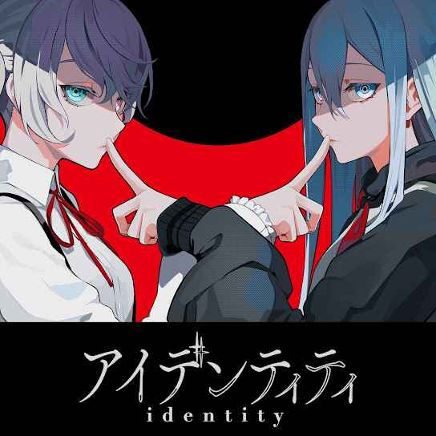

アイデンティティ - Identity
THE 11TH SINGLE
SINGLE INFORMATION
LABEL: アイデンティティ - Identity
RELEASED: March 31st, 2025
Description

Identity (アイデンティティ) is a commissioned song by Kanaria, sung by Hatsune Miku and Yoisaki Kanade. It was made for Nissin Foods' Cup Noodle Collaboration, and was the first of five songs added for its song campaign.
Single List
1. アイデンティティ - Identity (feat. 宵崎 奏/Yoisaki Kanade, 初音 ミク/Hatsune Miku)
Composed by Kanaria